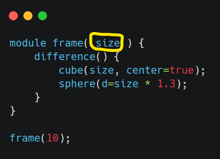

Module クラスについて
制限があるものの、 [OpenSCAD の Module] もサポートしています。
主な制限
モジュールのパラメーター (以下の OpenSCAD コードの黄色で囲った部分) を使うことができません。
使い方
必要なライブラリを import
from decimal import Decimal
from montyscad import monty_symbols as ms
from montyscad import (
Scad,
Symbol,
Module
)
Module クラスから派生したモジュールを作成。Module クラスは Symbol クラスから派生しているので append() で自分自身に子要素を追加します。
class frame(Module):
def __init__(self):
super().__init__()
self.append(
ms.difference()(
ms.cube(10, center=True),
ms.sphere(d=10 * Decimal('1.3'))
)
)
scad オブジェクトを作成し、作成したモジュールのオブジェクトを登録
scad = Scad()
scad.append(frame())
登録したモジュールを呼び出し
scad.append(Symbol('frame'))
出力される OpenSCAD スクリプトは以下のようになります。
module frame() {
difference() {
cube(10, center=true);
sphere(d=13.0);
}
}
frame();